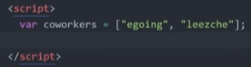

(1) 조건문의 문법
배열(array): 데이터 중에 서로 연관된 데이터를 정리정돈해서 담아두는 일종의 수납상자문자는 큰 따옴표로 시작해서 큰 따옴표로 끝난다. " 배열은 대괄호로 시작해서 대괄호로 끝난다. [] 이 안에 여러가지 값을 적을 수 있고, 콤마로 구분한다.

두 가지 값을 만들었고 이 배열을 coworkers라는 변수에 담았다. night 버튼의 불만족 하나 더 - night 모드에서 링크 글자 색깔이 너무 어두워서 잘 안 보인다. → 얘를 클릭했을 때, 이 웹페이지에 있는 모든 링크의 style 속성값을 밝게 바꿔주는 코딩을 할 것이다. 이 웹 페이지에 있는 모든 태그를 가져온 다음에 그 태그 하나하나에 대해서 반복적으로 powder blue 컬러를 지정한다는 내용의 코드이다. 다음 시간부터는 배열과, 배열을 이용해서 반복적인 작업을 처리하기 위한 반복문을 배울 것이다.